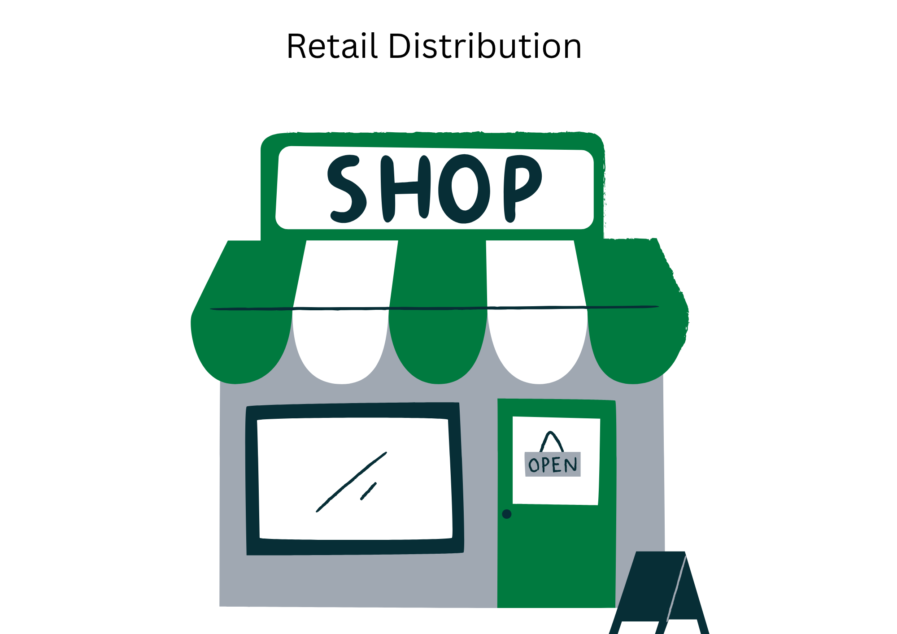

Ember
This case study conducts a comprehensive strategic brand audit of Ember, specifically focusing on its position within the premium temperature-controlled drinkware and infant-care markets.
Ember Target Market and audiences
Ember's target market predominantly consists of affluent professionals and tech-enthusiasts or busy individuals who are willing to accept a premium price point of approximately £130 for lifestyle-enhancing electronics. Its secondary segment targets 'precautious parents' via the Ember baby line, who seek a safe, on-the-go feeding solution.
Competitors
Ember competes through an active, app-controlled heating system that maintains the temperature warm for longer hours; It is unique from existing traditional thermal market leaders like Yeti and Chilly's, who uses passive vacuum insulation (No active heat management). In long-run, Ember's Primary strategic direction focuses on sustaining its premium market positioning and expanding its elevated lifestyle appeal; the secondary target can transcend into broader Baby essentials, and Healthcare markets (Wells, 2018).
As the smart-drinkware category becomes increasingly saturated with multiple brands (Demopoulos, 2024), Ember's continued growth relies on effectively communicating its unique technological advantages over traditional thermal competitors, making a critical evolution of its current brand positioning essential (Bailey, 2025).
Brand Architecture: How Ember Stretches from Coffee to Cold-Chain Logistics
Brand architecture is how a company organise its products and defines how they relate to one another. Ember handles this beautifully through a "Branded House" strategy, keeping every single product under one master name. Instead of selling separate products, Ember sells a single core promise: thermal precision.
This narrative lets them execute seamless horizontal extensions into completely different lifestyle categories. Because consumers already trust the Ember name on their desk, the brand easily launches travel mugs and smart baby feeding systems without spending millions to build trust from scratch. It's an incredibly efficient way to launch new products while maximising marketing spend.
But the real complexity (and genius) of Ember's architecture is its upward extension into high-stakes industries. Through Ember LifeSciences, they've successfully moved from a consumer morning ritual into medical-grade thermal shipping systems for pharmaceuticals. For a brand to expand from a luxury coffee accessory to a modern healthcare solution proves how remarkably elastic and powerful their brand equity truly is.
Strategic positioning of ember with its competitors
Ember occupies a unique value proposition by intersecting high technological sophistication with Ritual focus. While rivals like Yeti focus on utility and Vsitoo focus on functional coffee gadgets, ember is positioned as an aspirational lifestyle accessory.
Who is Ember and What is its identity

Let's approach this analysis by envisioning Ember as a 'human brand' and guess its identity. Brand identity represents the long-term, aspirational construct that is entirely controlled internally by the organisation reflecting in the consumer perception.
We will guess the identity through six interdependent elements - Physique, Personality, Culture, Relationship, Reflection and Self-image. These elements are structured along sender/receiver and internal/external axes. The value of this framework lies in providing a complete diagnostic of how coherently a brand express itself across various touchpoints.
Physique
The physique is immediately distinctively through its minimalistic black and white product surfaces, signature golden rings and ergonomic design, collectively communicate precision and premium quality. With elements of reddish-orange app icon reinforcing the brand's heat-related narrative in the digital environment.
Culture
Culture is strongly defined by its problem solving and innovation context. Ember's founding mission is on a universal problem solving (temperature-controlled devices for everyday use) and design engineering philosophy. The combination of innovation, patented technology, problem solving mentality with design focus sets a clear distinguishing from traditional kitchenware brands.
Personality
The personality of Ember is that of a sophisticated quietly confident and scientifically rigorous innovator.. The usage of terms like 'empowering' 'precise warming' and 'safety first. The use of golden rings as a part of its design and using language like 'best-in-class design' and 'using premium design' shows sophistication dimensions.
Relationship
The relationship is built on empowerment angle, The app enables users with temperature control, positioning Ember as a precision partner. Additionally, the brand's language such as 'enabling parents with precision heating and safety' 'paediatrician approved' and 'up-to-date technology' assures the relationship of a reliable and active partner empowering their day-to-day experience.
Reflection
The reflection depicts a design-aware aspirational professional who is time-conscious, aesthetically discerning and is willing to invest in quality. The internal reflection is reinforced by retail distribution through Apple, Harrods, and Starbucks.
Self-Image
The self-image is a powerful facet for Ember as it communicates that their users do not settle for mediocrity in daily rituals and values mindfulness and considered consumption.
The Retail branding strategy of Ember

For a manufacturer brand operating in the premium consumer technology space, the retail environment functions not only as a distribution channel, but as a strategic brand touchpoint capable of building or eroding Ember's equity.
Ember's leadership treats every retail partnership as a brand co-creation medium. This strategic logic is most clearly evidenced by the Starbucks partnership. Before ranging the product, Starbucks subjected Ember to rigorous testing to prove the mug did not affect the quality or taste of the coffee in any way. This gatekeeping can act as a quality endorsement, transferring Starbucks' established associations of ritual, quality, and daily indulgence directly onto Ember's brand; a mechanism described as retail brand equity transfer.
To further analyse the intricacy of the Starbucks and Ember partnership, we can look through the lens of experiential branding. Ember fundamentally is a 'phygital' product, the physical + digital app make the mug a smart, utility-driven tool. When these smart mugs are positioned within a brand like Starbucks, the experiential elements of sense, feel, think, act and Relate are achieved. The sensory stimulus through of smell of coffee (Sense), the warm and cosy store design (feel), the cognitive experience of buying a drink for a reusable and smart mug (Think); combined with the affective resonance of emotional comfort (Act) and the intellectual reasoning of being endorsed by the world's leading coffee brand (Relate) validates Ember's premium positioning.
Ember do not opperate its own store, to survive the lack of physical control. Ember must rely on strategic retail partnerships. Ember also partnered with Apple where its products can be shopped. For a small, niche brand like Ember the apple 'find my device' or 'health monitoring' aspects are far more beneficiary compared to the retailer brand. Being on a 'digital ecosystem of Apple' Ember reduces the decision-making friction points for consumers (paring, locating and managing) and benefit from the retail association. By placing its products in highly controlled spatial environments of Apple and Starbucks, Ember borrows their experiential brand equity.
Strategic Recommendations: Scaling the Ecosystem & Protecting Premium Equity
To transition Ember from a high-tech novelty into an enduring lifestyle and wellness powerhouse, the brand must address two critical strategic challenges: building community-driven trust and correcting channel pricing contradictions.
The following two-part playbook outlines a realistic framework designed to drive emotional resonance and safeguard brand value.
Strategy 1: The Two-Tier IMC Influencer campaign
The Challenge: Ember's digital ecosystem is highly functional but lacks emotional community depth. With the launch of the luxury £399.99 Ember Baby Bottle System, the brand has entered a high-stakes market where purchasing decisions require deep emotional trust, safety reassurance, and peer validation.
The Playbook (Inspired by the Stanley Turnaround): Ember should deploy a coordinated, two-tier Integrated Marketing Communications (IMC) influencer strategy that transforms hardware specifications into lifestyle status symbols, mirroring the community-first approach that scaled Stanley from $70M to $750M.
Tier 1: The Conscious Parent (Instagram & TikTok): Partner with premium millennial and Gen Z family creators. Instead of pitching a "baby bottle," frame the system as the ultimate investment in stress-free, precision parenting. Seed organic content under the hashtag #EmberMoments, showcasing midnight feeding rituals, dad-life routines, and seamless on-the-go travel.
Tier 2: The High-Performance Professional (Linkedin & YouTube): Partner with design, corporate tech, and wellness creators. Position the flagship Ember Mugs as non-negotiable tools for intentional, high-performance daily routines, reinforcing the sophistication and competence pillars of the brand's core identity. The placement must be casual and organic and not forced. The briefing must insist the influencer to cary without explicitly saying that they are using Ember for continuous heating; It must be organic where they carry it while recording from desk and from car and at home. This way the audience will naturaaly be intreagued and not forcefully engage.
Implementation & Visual Guardianship: To prevent brand dilution, all creator assets must strictly align with Ember's minimalist visual aesthetic, signature monochromatic design tones, and the foundational "one degree at a time" brand narrative across every digital channel.
Growth & Retention Metrics: Success will move beyond basic vanity metrics (likes and views):
- Direct Attribution: Track DTC revenue via segment-specific UTM links and custom creator conversion codes.
- Brand Sentiment & Advocacy: Measure post-purchase satisfaction and meaning transfer through Net Promoter Scores (NPS) targeted at new parent demographics.
Strategy 2: Retail Discipline & Channel Price Protection
The Challenge: Ember enjoys incredible brand equity transfer through premier partnerships with Apple, Harrods, and Starbucks. However, a severe omnichannel contradiction has emerged: the flagship mugs face deep, inconsistent discounting on open marketplaces like Amazon and mass retail shelves, directly threatening Ember's premium lifestyle positioning.
The Playbook (The Le Creuset Strategy): Premium brands cannot survive price-driven retail environments. Ember must implement a strict distribution discipline strategy to protect its luxury positioning across all touchpoints.
Enforce a Strict MAP Policy: Establish a mandatory Minimum Advertised Price (MAP) policy across all global retail and marketplace contracts. Take inspiration from heritage luxury brands like Le Creuset; whether a consumer encounters the product on Amazon, John Lewis, or DTC, the price premium must remain uncompromised to maintain perceived value.
Curate Premium Café Partnerships: Replicate Ember's highly successful North American Starbucks footprint in the UK market by partnering with elite boutique café networks like Gail's or Blank Street Café.
Operational Brand Guardianship: Actively audit how products are displayed and experienced in-store, ensuring Ember's multi-color lineup is showcased as an intentional lifestyle accessory rather than a utility kitchen appliance.
Implementation Action Plan:
- 1. Formalize and distribute updated MAP agreements to all third-party retailers.
- 2. Conduct a comprehensive cross-channel retail audit, offboarding persistent discount-driven distributors.
- 3. Launch experiential shelf-space layouts within boutique café environments.
Brand Health Metrics: Progress must be monitored through structured brand health tracking:
- Brand Equity Tracking: Conduct biannual Brand Inventories and Brand Exploratories to evaluate consumer perceptions.
- Salience & Recall: Measure shifts in unaided brand recognition and premium brand recall across key metropolitan target environments to ensure the brand stays top-of-mind without relying on discounts.
Conclusion: what Ember gets right and what to fix next
Ember has built a clear premium position in smart drinkware and has extended that equity into adjacent categories like baby feeding. The brand story is simple and compelling: precision temperature control that upgrades everyday rituals. That promise shows up consistently in the product experience, minimalist design language, and the "tech-meets-lifestyle" cues customers pick up through selective retail placements.
A major growth driver has been borrowed credibility. By showing up in environments like Apple and Starbucks, Ember benefits from their curated in-store experience and reputation for quality. In practice, these partnerships work like powerful endorsements: they reinforce Ember as a premium, design-led technology brand (not just another insulated mug).
The challenge: Ember’s premium perception is still fragile in channels it doesn’t control. Outside of tightly managed partners, the brand can appear in price-competitive, comparison-heavy environments where discounts and inconsistent merchandising dilute the premium signal. When customers see different prices and presentations across retailers, the brand promise feels less “premium” and more “commodity”.
The takeaway: To protect long-term brand equity, Ember needs to operate with stronger channel discipline and brand guardianship globally:
- Standardise how the brand is priced, displayed, and described across third-party channels.
- Design repeatable in-store experience guidelines that retailers can execute (even when Ember doesn’t own the space).
- Institutionalise regular brand audits to catch dilution early and correct inconsistencies.
If Ember tightens distribution consistency while continuing to invest in distinctive experiences and partnerships, it can preserve its premium positioning and scale profitably across markets and customer segments.